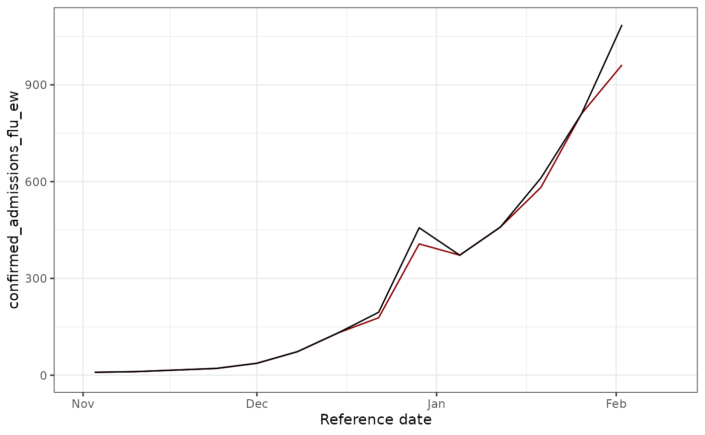
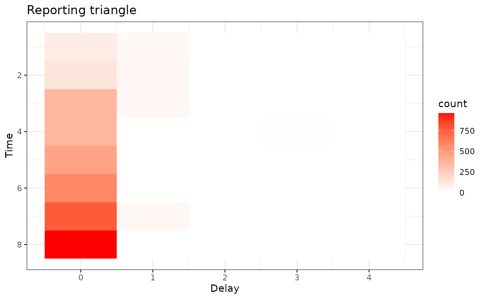
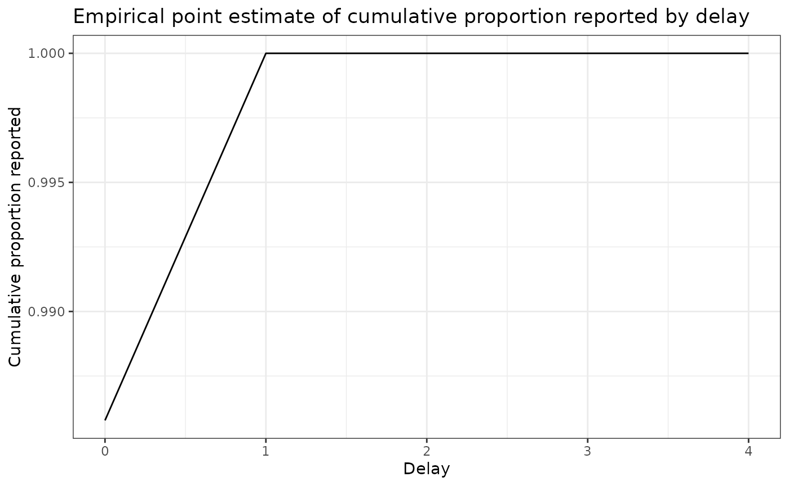
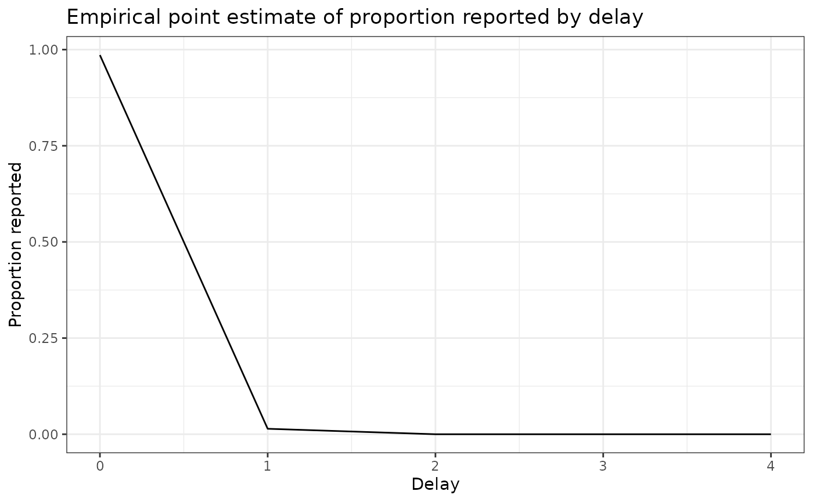

Other: Introduction to panel data versioning and nowcasting
Source:vignettes/nowcasting-demo.Rmd
nowcasting-demo.RmdIntroduction
This vignette walks through a minimal baseline nowcasting workflow
using the baselinenowcast and epinowcast
packages. We focus on weekly confirmed hospital admissions attributed to
influenza in Maryland and illustrate how to: - retrieve revision-aware
surveillance data, - build a reporting triangle, - estimate a reporting
delay distribution, and - generate a deterministic point nowcast that
corrects for under-reporting.
We repeat these steps with TOODO
Setup
We assume you have followed the first guide of this course, and have an API key ready for the DELPHI Epidata API.
epidatr::get_api_key()We will nowcast the confirmed hospital admission for influenza in Maryland. We specify the date at which we are nowcasting, and the date with the final data for evaluation.
state_name <- "Maryland"
geo_values <- "md"
forecast_disease <- "influenza"
nowcast_date = "2025-02-10"
eval_date = "2025-03-21"Load the required packages.
Retrieve and Prepare Surveillance Data
Use epidatr::pub_covidcast() to pull National Healthcare
Safety Network (NHSN) hospital admission data for the selected disease
and location. The data are returned with revision tracking
(issue) that we rely on for nowcasting.
# Map disease names to NHSN signal names
# Based on epidatr NHSN signals for respiratory diseases
signal_map <- list(
"influenza" = "confirmed_admissions_flu_ew",
"covid" = "confirmed_admissions_covid_ew",
"rsv" = "confirmed_admissions_rsv_ew"
)
signal <- signal_map[[forecast_disease]]
# Call epidatr to get the data
epidata <- epidatr::pub_covidcast(
source = "nhsn",
signals = signal,
geo_type = "state",
time_type = "week",
geo_values = tolower(geo_values),
issues = "*"
)## Warning: No API key found. You will be limited to non-complex queries and encounter rate
## limits if you proceed.
## ℹ See `?save_api_key()` for details on obtaining and setting API keys.
## This warning is displayed once every 8 hours.
target_data <- epidata |>
select(
location = geo_value,
reference_date = time_value,
report_date = issue,
confirm = value
) |>
enw_filter_report_dates(latest_date = eval_date) |>
enw_filter_reference_dates(latest_date = nowcast_date)
target_data$report_date %>% unique()## [1] "2024-11-17" "2024-11-24" "2024-12-01" "2024-12-08" "2024-12-15"
## [6] "2024-12-22" "2024-12-29" "2025-01-05" "2025-01-12" "2025-01-19"
## [11] "2025-01-26" "2025-02-02" "2025-02-09" "2025-02-16" "2025-02-23"
## [16] "2025-03-02" "2025-03-09" "2025-03-16"Here we have transformed the data so it is in the format for
epinowcast, with columns * reference_date the date of the
observation, in this example the date of an incident influenza admission
in a hospital * report_date: the date of report for a given
set of observations by reference date * confirm: the total
(i.e. cumulative) number of hospitalisations by reference date and
report date.
Create two views of the data: the real-time version available on the
nowcast date and the final version used for evaluation. This use very
convenient filtering functions in epinowcast. The epinowcast function
enw_latest_data() filters observations to keep only the
latest available reported total counts for each reference date. The
epinowcast function enw_filter_report_dates() is used to
create a truncated dataset for generating a retrospective nowcast, using
the data that would have been available as of the nowcast date.
observed_data <- enw_filter_report_dates(target_data, latest_date = nowcast_date)
obs_by_reference <- enw_latest_data(observed_data)
latest_data <- enw_latest_data(target_data) |>
enw_filter_reference_dates(latest_date = max(observed_data$reference_date))Let’s plot our two datasets, the red line shows the total number of confirmed admissions on each reference date, across all delays, using the data available at the nowcast date, whereas the blackline show the final value of the data.
obs_data_by_reference_date <- enw_latest_data(observed_data)
plot_data <- ggplot() +
geom_line(
data = obs_data_by_reference_date,
aes(x = reference_date, y = confirm), color = "darkred"
) +
geom_line(
data = latest_data,
aes(x = reference_date, y = confirm), color = "black"
) +
theme_bw() +
xlab("Reference date") +
ylab(signal) +
#scale_y_continuous(trans = "log10") +
xlim(as.Date("2024-11-01"), as.Date(nowcast_date))
ggtitle("Comparing real-time and later observed cases")## <ggplot2::labels> List of 1
## $ title: chr "Comparing real-time and later observed cases"
plot_data## Warning: Removed 222 rows containing missing values or values outside the scale range
## (`geom_line()`).
## Removed 222 rows containing missing values or values outside the scale range
## (`geom_line()`). We see that some revision occurred ! Let’s try to fix these.
Build the Reporting Triangle
Restrict the data to a training window and construct the reporting triangle, which stores rows of reference weeks and columns of reporting delays.
# Empirical data outside this delay window will not be used for training
max_delay <- 4 # weeks
n_training_volume <- 8*7 # days (30 weeks)Next we will use the epinowcast function,
enw_filter_reference_dates() to filter to only include
n_training_volume days of historical data, and the epinowcast function
enw_latest_data() will be used to filter for the latest
available reported total counts for each reference date. Finally to
obtain the data we want to evaluate the forecasts against, we will use
enw_filter_reference_dates() applied to the target_data, to filter it
for only the n_training_volume days of historical data.
training_data <- enw_filter_reference_dates(observed_data, include_days = n_training_volume)
latest_training_data <- enw_latest_data(training_data)
eval_data <- enw_filter_reference_dates(latest_data, include_days = n_training_volume-1)
pobs <- enw_preprocess_data(
obs = training_data,
max_delay = max_delay+2,
timestep="week",
set_negatives_to_zero = TRUE
)## Warning: The coverage of the specified maximum delay could not be reliably checked.
## • There are only very few (4) reference dates that are sufficiently far in the
## past (more than 27 days) to compute coverage statistics for the maximum
## delay.
## • You can test different maximum delays and obtain coverage statistics using
## the function check_max_delay() (`?epinowcast::check_max_delay()`).
reporting_triangle_df <- select(
pobs$new_confirm[[1]],
reference_date,
delay,
new_confirm
)
reporting_triangle <- reporting_triangle_df |>
pivot_wider(names_from = delay, values_from = new_confirm) |>
select(-reference_date) |>
as.matrix()
reporting_triangle[is.na(reporting_triangle)] <- 0
reporting_triangle## 0 1 2 3 4
## [1,] 94 37 0 0 0
## [2,] 134 44 0 0 0
## [3,] 367 40 0 0 0
## [4,] 366 0 0 6 0
## [5,] 459 0 0 0 0
## [6,] 582 0 0 0 0
## [7,] 770 40 0 0 0
## [8,] 962 0 0 0 0Look at the output of the triangle, what do you notice ?
Inspect the reporting triangle using a heat map.
#### code to plot:
triangle_df <- as.data.frame(reporting_triangle) |>
mutate(time = row_number()) |>
pivot_longer(!time,
values_to = "count",
names_prefix = "V",
names_to = "delay"
) |>
mutate(delay = as.numeric(delay))
plot_triangle <- ggplot(
triangle_df,
aes(x = delay, y = time, fill = count)
) +
geom_tile() +
scale_fill_gradient(low = "white", high = "red") +
labs(title = "Reporting triangle", x = "Delay", y = "Time") +
theme_bw() +
scale_y_reverse()
plot_triangle Here, the grey indicates matrix elements that are NA, which we would expect to be the case in the bottom right portion of the reporting triangle where the counts have yet to be observed.
Estimate Delay and Generate Point Nowcasts
We use half of the available reference weeks to estimate the delay distribution and reserve the remaining weeks for evaluation.
# most recent 50% of the reference times for delay estimation
n_history_delay <- as.integer(0.5 * n_training_volume) # days
delay_pmf <- estimate_delay(
reporting_triangle = reporting_triangle,
max_delay = max_delay,
n = n_history_delay/7
)
delay_df <- data.frame(
delay = 0:(length(delay_pmf) - 1),
pmf = delay_pmf
)
delay_cdf_plot <- ggplot(delay_df) +
geom_line(aes(x = delay, y = cumsum(pmf))) +
xlab("Delay") +
ylab("Cumulative proportion reported") +
ggtitle("Empirical point estimate of cumulative proportion reported by delay") + # nolint
theme_bw()
delay_pmf_plot <- ggplot(delay_df) +
geom_line(aes(x = delay, y = pmf)) +
xlab("Delay") +
ylab("Proportion reported") +
ggtitle("Empirical point estimate of proportion reported by delay") +
theme_bw()Let’s plot the distribution of delays
delay_cdf_plot
delay_pmf_plot
Apply the delay to generate a point nowcast
point_nowcast_matrix <- apply_delay(
reporting_triangle = reporting_triangle,
delay_pmf = delay_pmf
)
point_nowcast_df <- eval_data |>
mutate(nowcast = rowSums(point_nowcast_matrix))
prep_latest_data <- latest_training_data |>
mutate(type = "Real-time data") |>
select(type, reference_date, count = confirm)
# Combine data into a single dataframe for plotting
plot_data <- point_nowcast_df |>
pivot_longer(
cols = c(confirm, nowcast),
names_to = "type",
values_to = "count"
) |>
mutate(type = case_when(
type == "confirm" ~ "Final observed data",
type == "nowcast" ~ "Point nowcast",
TRUE ~ type
)) |>
bind_rows(prep_latest_data)
# Create plot with data type as a variable
plot_pt_nowcast <- ggplot(plot_data, aes(
x = reference_date,
y = count,
color = type,
linetype = type
)) +
geom_line() +
scale_color_manual(values = c(
"Real-time data" = "darkred",
"Final observed data" = "black",
"Point nowcast" = "darkblue"
)) +
scale_linetype_manual(values = c(
"Real-time data" = "dashed",
"Final observed data" = "dashed",
"Point nowcast" = "solid"
)) +
theme_bw() +
xlab("Reference date") +
ylab("Confirmed admissions") +
#scale_y_continuous(trans = "log10") +
ggtitle("Comparing real-time, nowcasted, and later observed cases") +
theme(legend.position = "bottom") +
labs(color = "Type", linetype = "Type")
plot_pt_nowcast
As you observe, this example is disappointing, as in this example the point nowcast (blue) sits almost exactly on top of the real-time observations (red). That behaviour aligns with the estimated delay distribution, which places nearly all probability mass on a zero-week delay for the most recent reference times.
Unfortunately, the NHSN signal currently exposed via Epidata only stores revisions back to late 2024-11-17, so we cannot draw on a longer training history to expose weeks with notable late reports.
Indeed, nowcasting is beneficial with a longer history of data (unfortnuataly epidata does not store NHSN issues before 2024-11-17), better nowcasting nodels.
To see larger adjustments, experiment with other locations, earlier nowcast dates, or datasets that contain richer revision patterns (for example the Robert Koch Institute line list available through the Germany Nowcasting Hub).
Next Steps
- Use
estimate_and_apply_uncertainty()to obtain probabilistic nowcast intervals if you need calibrated uncertainty estimates. - Adjust the training window (
n_training_weeks) ormax_delayto match the reporting dynamics of other diseases or locations. - Explore model variants documented in the baselinenowcast vignette for stratified data or alternative delay models.
More ressources:
- Paulo Ventura’s archived NHSN exports: https://paulocv.github.io/respiratory_archive/
-
baselinenowcastgetting started guide: https://baselinenowcast.epinowcast.org/articles/baselinenowcast.html (and the accompanying paper: https://www.medrxiv.org/content/10.1101/2025.08.14.25333653v2) -
epinowcastintroduction for principled hierarchical nowcasting models: https://package.epinowcast.org/articles/epinowcast.html - Delphi Insight Net Workshop 2024 slide decks (see the first two sessions): https://cmu-delphi.github.io/insightnet-workshop-2024
- SISMID NFIDD course notes on nowcasting: https://nfidd.github.io/sismid/
- Lison et al. review of the nowcasting literature: https://journals.plos.org/ploscompbiol/article?id=10.1371/journal.pcbi.1012021